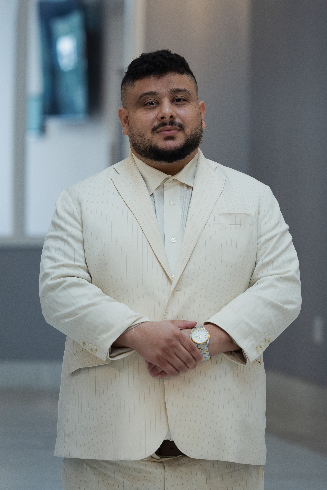

ADVOCACY
A voice for
Palestinian rights.
Grassroots organizing, public education, and advocacy for Palestinian freedom and dignity.
Explore the work
A commitment to justice.
Advocate. Educator. Community organizer.
Working for Palestinian rights and human dignity.

IN CONVERSATION
& IN THE NEWS
A COMMITMENT TO HUMANITY
From local conversations to national advocacy,
the work begins with community.
ADVOCACY
Grassroots organizing, public education, and advocacy for Palestinian freedom and dignity.
Explore the workCOMMUNITY
Joining faith leaders across the nation to discuss youth mental health and access to community support.
Community conversationsEDUCATION
Workshops, writing, and public conversations connecting faith, history, and civic responsibility.
Explore his perspectivesBEHIND THE PUBLIC VOICE
Mohamad’s work brings together community organizing, education, and advocacy for Palestinian rights.
With a background in social work and political science, his experience spans grassroots advocacy and engagement with marginalized communities.
Get to know MohamadLISTEN. REFLECT. ENGAGE.
Swipe to explore the conversations.
IN HIS WORDS
…renew our commitment to the land of Palestine
and its freedom from oppression.
Mohamad Habehh Palestine in the Islamic Consciousness · March 2021
Read the full reflection (opens in a new tab)WRITING & REFLECTIONS
A reflection on Palestine’s place in Islamic faith, memory, and responsibility.
Read the article (opens in a new tab)